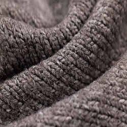
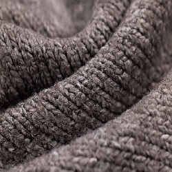

Kudonta
Kudonta on vuonna 2021 perustettu voittoa tavoittelematon kerho joka kattaa harrastekulut myymällä kerholaisten töitä.
Sen tavoite on edistää yhteisöllisyyttä ja jatkaa käsitöiden pitkää perinnettä Suomessa sukupolvilta toisille.
Tervetuloa mukaan
Harraste toimintaan liittyminen ei sido eikä velvoita sinua mitenkään. Paikalle saa saapua miten ja milloin sekä millä tavalla itselleen parhaiten sopii. Kunhan mukana on positiivinen tekeminen. Harrastelijoita käy viikoittain vauvasta vaariin ja vaikka taitoa ei vielä löydy, niin halukkaita opettajia on tarjolla.
Kokoontumisissa tarjolla aina kahvia, mehua sekä pientä purtavaa.
Kokoontumiset
| MAANANTAI | TIISTAI | KESKIVIIKKO | TORSTAI | PERJANTAI | LAUANTAI | SUNNUNTAI |
|---|---|---|---|---|---|---|
| Huippilan koulu | Kyläkirjasto | Huippilan koulu | Kyläkirjasto | Kyläkirjasto | Huippilan Tori | Huippilan tori |
| 16-20 | 10-16 | 16-20 | 10-16 | 10-20 | 9-14 | 9-14 |
Yhteistyöt
Toteutamme myös erilaisia tapahtumia yhteistyössä yritysten kanssa.
Lisätietoa saat ottamalla yhteyttä.
Kuvia
{kind=link}
{kind=link}
{kind=link}
{kind=link}
{kind=link}
 
